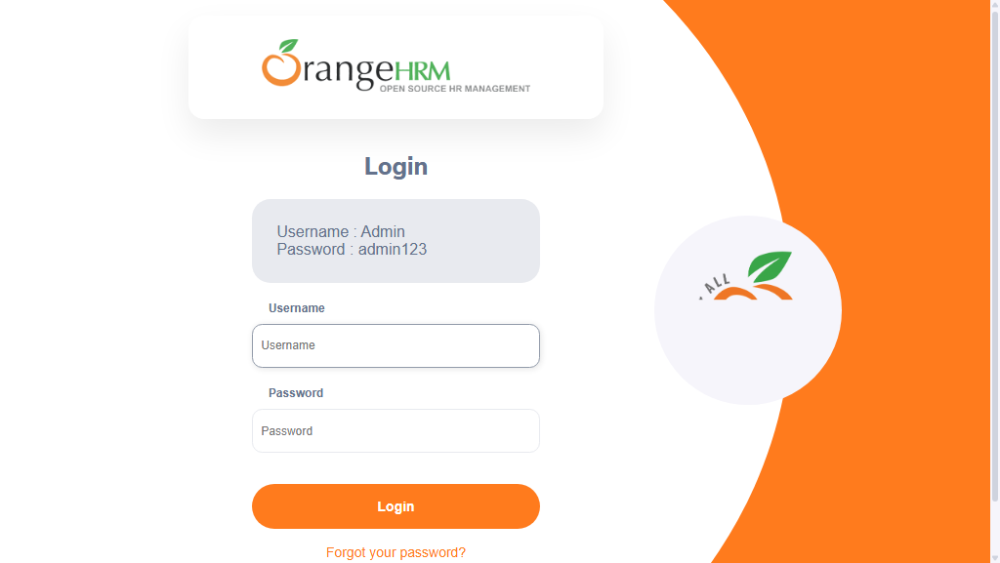

-
sampleTest_user1_20-42-49
8:42:50 PM / 00:00:12:694 Fail
sampleTest_user1_20-42-49
09.01.2026 8:42:50 PM 09.01.2026 8:43:02 PM 00:00:12:694 · #test-id=1Status Timestamp Details Skip 8:43:02 PM Test Skipped Fail 8:43:02 PM Info 8:43:02 PM 📂 Logs: Info 8:43:02 PM 📄 sampleTest_user1_20-42-49.log -
sampleTest2_user1_20-42-49
8:42:50 PM / 00:00:12:692 Fail
sampleTest2_user1_20-42-49
09.01.2026 8:42:50 PM 09.01.2026 8:43:02 PM 00:00:12:692 · #test-id=2Status Timestamp Details Skip 8:43:02 PM Test Skipped Fail 8:43:02 PM -
sampleTest3_user1_20-42-49
8:42:50 PM / 00:00:12:503 Fail
sampleTest3_user1_20-42-49
09.01.2026 8:42:50 PM 09.01.2026 8:43:02 PM 00:00:12:503 · #test-id=3Status Timestamp Details Skip 8:43:02 PM Test Skipped Fail 8:43:02 PM -
sampleTest1_user1_20-42-49
8:42:50 PM / 00:00:15:524 Fail
sampleTest1_user1_20-42-49
09.01.2026 8:42:50 PM 09.01.2026 8:43:05 PM 00:00:15:524 · #test-id=4Status Timestamp Details Skip 8:43:05 PM Test Skipped Fail 8:43:05 PM Info 8:43:05 PM 📂 Logs: Info 8:43:05 PM 📄 sampleTest1_user1_20-42-49.log -
sampleTest3_user1_20-43-06
8:43:06 PM / 00:00:18:577 Fail
sampleTest3_user1_20-43-06
09.01.2026 8:43:06 PM 09.01.2026 8:43:25 PM 00:00:18:577 · #test-id=5Status Timestamp Details Skip 8:43:25 PM Test Skipped Fail 8:43:25 PM -
sampleTest2_user1_20-43-06
8:43:06 PM / 00:00:18:618 Fail
sampleTest2_user1_20-43-06
09.01.2026 8:43:06 PM 09.01.2026 8:43:25 PM 00:00:18:618 · #test-id=6Status Timestamp Details Skip 8:43:25 PM Test Skipped Fail 8:43:25 PM -
sampleTest_user1_20-43-07
8:43:07 PM / 00:00:18:215 Fail
sampleTest_user1_20-43-07
09.01.2026 8:43:07 PM 09.01.2026 8:43:25 PM 00:00:18:215 · #test-id=7Status Timestamp Details Skip 8:43:25 PM Test Skipped Fail 8:43:25 PM Info 8:43:25 PM 📂 Logs: Info 8:43:25 PM 📄 sampleTest_user1_20-43-07.log -
sampleTest1_user1_20-43-11
8:43:11 PM / 00:00:13:925 Fail
sampleTest1_user1_20-43-11
09.01.2026 8:43:11 PM 09.01.2026 8:43:25 PM 00:00:13:925 · #test-id=8Status Timestamp Details Skip 8:43:25 PM Test Skipped Fail 8:43:25 PM Info 8:43:25 PM 📂 Logs: Info 8:43:25 PM 📄 sampleTest1_user1_20-43-11.log -
sampleTest_user1_20-43-28
8:43:28 PM / 00:00:22:001 Fail
sampleTest_user1_20-43-28
09.01.2026 8:43:28 PM 09.01.2026 8:43:50 PM 00:00:22:001 · #test-id=9Status Timestamp Details Fail 8:43:50 PM Info 8:43:50 PM 📂 Logs: Info 8:43:50 PM 📄 sampleTest_user1_20-43-28.log -
sampleTest2_user1_20-43-28
8:43:28 PM / 00:00:21:888 Fail
sampleTest2_user1_20-43-28
09.01.2026 8:43:28 PM 09.01.2026 8:43:50 PM 00:00:21:888 · #test-id=10Status Timestamp Details Fail 8:43:50 PM -
sampleTest3_user1_20-43-32
8:43:32 PM / 00:00:17:432 Fail
sampleTest3_user1_20-43-32
09.01.2026 8:43:32 PM 09.01.2026 8:43:50 PM 00:00:17:432 · #test-id=11Status Timestamp Details Fail 8:43:50 PM -
sampleTest1_user1_20-43-33
8:43:33 PM / 00:00:16:929 Fail
sampleTest1_user1_20-43-33
09.01.2026 8:43:33 PM 09.01.2026 8:43:50 PM 00:00:16:929 · #test-id=12Status Timestamp Details Fail 8:43:50 PM Info 8:43:50 PM 📂 Logs: Info 8:43:50 PM 📄 sampleTest1_user1_20-43-33.log -
sampleTest3_user2_20-43-52
8:43:52 PM / 00:00:17:205 Fail
sampleTest3_user2_20-43-52
09.01.2026 8:43:52 PM 09.01.2026 8:44:09 PM 00:00:17:205 · #test-id=13Status Timestamp Details Skip 8:44:09 PM Test Skipped Fail 8:44:09 PM -
sampleTest_user2_20-43-53
8:43:53 PM / 00:00:16:263 Fail
sampleTest_user2_20-43-53
09.01.2026 8:43:53 PM 09.01.2026 8:44:09 PM 00:00:16:263 · #test-id=14Status Timestamp Details Skip 8:44:09 PM Test Skipped Fail 8:44:09 PM Info 8:44:09 PM 📂 Logs: Info 8:44:09 PM 📄 sampleTest_user2_20-43-53.log -
sampleTest1_user2_20-43-53
8:43:53 PM / 00:00:15:670 Fail
sampleTest1_user2_20-43-53
09.01.2026 8:43:53 PM 09.01.2026 8:44:08 PM 00:00:15:670 · #test-id=15Status Timestamp Details Skip 8:44:08 PM Test Skipped Fail 8:44:08 PM Info 8:44:08 PM 📂 Logs: Info 8:44:08 PM 📄 sampleTest1_user2_20-43-53.log -
sampleTest2_user2_20-43-53
8:43:53 PM / 00:00:15:666 Fail
sampleTest2_user2_20-43-53
09.01.2026 8:43:53 PM 09.01.2026 8:44:08 PM 00:00:15:666 · #test-id=16Status Timestamp Details Skip 8:44:08 PM Test Skipped Fail 8:44:08 PM -
sampleTest1_user2_20-44-10
8:44:10 PM / 00:00:19:072 Fail
sampleTest1_user2_20-44-10
09.01.2026 8:44:10 PM 09.01.2026 8:44:29 PM 00:00:19:072 · #test-id=17Status Timestamp Details Skip 8:44:29 PM Test Skipped Fail 8:44:29 PM Info 8:44:29 PM 📂 Logs: Info 8:44:29 PM 📄 sampleTest1_user2_20-44-10.log -
sampleTest2_user2_20-44-11
8:44:11 PM / 00:00:18:558 Fail
sampleTest2_user2_20-44-11
09.01.2026 8:44:11 PM 09.01.2026 8:44:29 PM 00:00:18:558 · #test-id=18Status Timestamp Details Skip 8:44:29 PM Test Skipped Fail 8:44:29 PM -
sampleTest_user2_20-44-13
8:44:13 PM / 00:00:16:653 Fail
sampleTest_user2_20-44-13
09.01.2026 8:44:13 PM 09.01.2026 8:44:29 PM 00:00:16:653 · #test-id=19Status Timestamp Details Skip 8:44:29 PM Test Skipped Fail 8:44:29 PM Info 8:44:29 PM 📂 Logs: Info 8:44:29 PM 📄 sampleTest_user2_20-44-13.log -
sampleTest3_user2_20-44-13
8:44:13 PM / 00:00:15:819 Fail
sampleTest3_user2_20-44-13
09.01.2026 8:44:13 PM 09.01.2026 8:44:29 PM 00:00:15:819 · #test-id=20Status Timestamp Details Skip 8:44:29 PM Test Skipped Fail 8:44:29 PM -
sampleTest_user2_20-44-32
8:44:32 PM / 00:00:19:841 Fail
sampleTest_user2_20-44-32
09.01.2026 8:44:32 PM 09.01.2026 8:44:52 PM 00:00:19:841 · #test-id=21Status Timestamp Details Fail 8:44:52 PM Info 8:44:52 PM 📂 Logs: Info 8:44:52 PM 📄 sampleTest_user2_20-44-32.log -
sampleTest3_user2_20-44-33
8:44:33 PM / 00:00:18:711 Fail
sampleTest3_user2_20-44-33
09.01.2026 8:44:33 PM 09.01.2026 8:44:52 PM 00:00:18:711 · #test-id=22Status Timestamp Details Fail 8:44:52 PM -
sampleTest1_user2_20-44-33
8:44:33 PM / 00:00:19:084 Fail
sampleTest1_user2_20-44-33
09.01.2026 8:44:33 PM 09.01.2026 8:44:52 PM 00:00:19:084 · #test-id=23Status Timestamp Details Fail 8:44:52 PM Info 8:44:52 PM 📂 Logs: Info 8:44:52 PM 📄 sampleTest1_user2_20-44-33.log -
sampleTest2_user2_20-44-34
8:44:34 PM / 00:00:17:905 Fail
sampleTest2_user2_20-44-34
09.01.2026 8:44:34 PM 09.01.2026 8:44:52 PM 00:00:17:905 · #test-id=24Status Timestamp Details Fail 8:44:52 PM -
sampleTest4_user1_20-44-53
8:44:53 PM / 00:00:21:473 Fail
sampleTest4_user1_20-44-53
09.01.2026 8:44:53 PM 09.01.2026 8:45:14 PM 00:00:21:473 · #test-id=25Status Timestamp Details Skip 8:45:14 PM Test Skipped Fail 8:45:14 PM -
sampleTest5_user1_20-44-53
8:44:53 PM / 00:00:19:388 Fail
sampleTest5_user1_20-44-53
09.01.2026 8:44:53 PM 09.01.2026 8:45:12 PM 00:00:19:388 · #test-id=26Status Timestamp Details Skip 8:45:12 PM Test Skipped Fail 8:45:12 PM -
verifyLoginTest1_user1_20-44-56
8:44:56 PM / 00:00:19:043 Fail
verifyLoginTest1_user1_20-44-56
09.01.2026 8:44:56 PM 09.01.2026 8:45:15 PM 00:00:19:043 · #test-id=27Status Timestamp Details Skip 8:45:15 PM Test Skipped Fail 8:45:15 PM Info 8:45:15 PM 📸 Screenshots: Info 8:45:15 PM 
-
verifyLoginTest_{COL1=ONE}_20-44-58
8:44:58 PM / 00:00:16:443 Fail
verifyLoginTest_{COL1=ONE}_20-44-58
09.01.2026 8:44:58 PM 09.01.2026 8:45:15 PM 00:00:16:443 · #test-id=28Status Timestamp Details Skip 8:45:15 PM Test Skipped Fail 8:45:15 PM Info 8:45:15 PM 📂 Logs: Info 8:45:15 PM 📄 verifyLoginTest_{COL1=ONE}_20-44-58.log Info 8:45:15 PM 📸 Screenshots: Info 8:45:15 PM 
-
sampleTest5_user1_20-45-14
8:45:14 PM / 00:00:22:097 Fail
sampleTest5_user1_20-45-14
09.01.2026 8:45:14 PM 09.01.2026 8:45:36 PM 00:00:22:097 · #test-id=29Status Timestamp Details Skip 8:45:36 PM Test Skipped Fail 8:45:36 PM -
sampleTest4_user1_20-45-17
8:45:17 PM / 00:00:18:626 Fail
sampleTest4_user1_20-45-17
09.01.2026 8:45:17 PM 09.01.2026 8:45:36 PM 00:00:18:626 · #test-id=30Status Timestamp Details Skip 8:45:36 PM Test Skipped Fail 8:45:36 PM -
verifyLoginTest_{COL1=ONE}_20-45-17
8:45:17 PM / 00:00:20:310 Fail
verifyLoginTest_{COL1=ONE}_20-45-17
09.01.2026 8:45:17 PM 09.01.2026 8:45:38 PM 00:00:20:310 · #test-id=31Status Timestamp Details Skip 8:45:38 PM Test Skipped Fail 8:45:38 PM Info 8:45:38 PM 📂 Logs: Info 8:45:38 PM 📄 verifyLoginTest_{COL1=ONE}_20-45-17.log Info 8:45:38 PM 📸 Screenshots: Info 8:45:38 PM 
-
verifyLoginTest1_user1_20-45-17
8:45:17 PM / 00:00:19:334 Fail
verifyLoginTest1_user1_20-45-17
09.01.2026 8:45:17 PM 09.01.2026 8:45:37 PM 00:00:19:334 · #test-id=32Status Timestamp Details Skip 8:45:37 PM Test Skipped Fail 8:45:37 PM Info 8:45:37 PM 📸 Screenshots: Info 8:45:37 PM 
-
sampleTest5_user1_20-45-39
8:45:39 PM / 00:00:19:445 Fail
sampleTest5_user1_20-45-39
09.01.2026 8:45:39 PM 09.01.2026 8:45:58 PM 00:00:19:445 · #test-id=33Status Timestamp Details Fail 8:45:58 PM -
sampleTest4_user1_20-45-39
8:45:39 PM / 00:00:19:378 Fail
sampleTest4_user1_20-45-39
09.01.2026 8:45:39 PM 09.01.2026 8:45:58 PM 00:00:19:378 · #test-id=34Status Timestamp Details Fail 8:45:58 PM -
verifyLoginTest_{COL1=ONE}_20-45-42
8:45:42 PM / 00:00:15:870 Fail
verifyLoginTest_{COL1=ONE}_20-45-42
09.01.2026 8:45:42 PM 09.01.2026 8:45:58 PM 00:00:15:870 · #test-id=35Status Timestamp Details Fail 8:45:58 PM Info 8:45:58 PM 📂 Logs: Info 8:45:58 PM 📄 verifyLoginTest_{COL1=ONE}_20-45-42.log Info 8:45:58 PM 📸 Screenshots: Info 8:45:58 PM 
-
verifyLoginTest1_user1_20-45-44
8:45:44 PM / 00:00:15:751 Fail
verifyLoginTest1_user1_20-45-44
09.01.2026 8:45:44 PM 09.01.2026 8:45:59 PM 00:00:15:751 · #test-id=36Status Timestamp Details Fail 8:45:59 PM Info 8:45:59 PM 📸 Screenshots: Info 8:45:59 PM 
-
verifyLoginTest_{COL1=ONEONE}_20-45-59
8:45:59 PM / 00:00:16:634 Fail
verifyLoginTest_{COL1=ONEONE}_20-45-59
09.01.2026 8:45:59 PM 09.01.2026 8:46:16 PM 00:00:16:634 · #test-id=37Status Timestamp Details Skip 8:46:16 PM Test Skipped Fail 8:46:16 PM Info 8:46:16 PM 📂 Logs: Info 8:46:16 PM 📄 verifyLoginTest_{COL1=ONEONE}_20-45-59.log Info 8:46:16 PM 📸 Screenshots: Info 8:46:16 PM 
-
sampleTest4_user2_20-46-00
8:46:00 PM / 00:00:18:930 Fail
sampleTest4_user2_20-46-00
09.01.2026 8:46:00 PM 09.01.2026 8:46:19 PM 00:00:18:930 · #test-id=38Status Timestamp Details Skip 8:46:19 PM Test Skipped Fail 8:46:19 PM -
sampleTest5_user2_20-46-02
8:46:02 PM / 00:00:17:532 Fail
sampleTest5_user2_20-46-02
09.01.2026 8:46:02 PM 09.01.2026 8:46:19 PM 00:00:17:532 · #test-id=39Status Timestamp Details Skip 8:46:19 PM Test Skipped Fail 8:46:19 PM -
verifyLoginTest1_user2_20-46-03
8:46:03 PM / 00:00:17:200 Fail
verifyLoginTest1_user2_20-46-03
09.01.2026 8:46:03 PM 09.01.2026 8:46:20 PM 00:00:17:200 · #test-id=40Status Timestamp Details Skip 8:46:20 PM Test Skipped Fail 8:46:20 PM Info 8:46:20 PM 📸 Screenshots: Info 8:46:20 PM 
-
verifyLoginTest_{COL1=ONEONE}_20-46-17
8:46:17 PM / 00:00:13:136 Fail
verifyLoginTest_{COL1=ONEONE}_20-46-17
09.01.2026 8:46:17 PM 09.01.2026 8:46:30 PM 00:00:13:136 · #test-id=41Status Timestamp Details Skip 8:46:30 PM Test Skipped Fail 8:46:30 PM Info 8:46:30 PM 📂 Logs: Info 8:46:30 PM 📄 verifyLoginTest_{COL1=ONEONE}_20-46-17.log Info 8:46:30 PM 📸 Screenshots: Info 8:46:30 PM 
-
sampleTest4_user2_20-46-21
8:46:21 PM / 00:00:19:022 Fail
sampleTest4_user2_20-46-21
09.01.2026 8:46:21 PM 09.01.2026 8:46:40 PM 00:00:19:022 · #test-id=42Status Timestamp Details Skip 8:46:40 PM Test Skipped Fail 8:46:40 PM -
sampleTest5_user2_20-46-21
8:46:21 PM / 00:00:18:271 Fail
sampleTest5_user2_20-46-21
09.01.2026 8:46:21 PM 09.01.2026 8:46:40 PM 00:00:18:271 · #test-id=43Status Timestamp Details Skip 8:46:40 PM Test Skipped Fail 8:46:40 PM -
verifyLoginTest1_user2_20-46-25
8:46:25 PM / 00:00:16:145 Fail
verifyLoginTest1_user2_20-46-25
09.01.2026 8:46:25 PM 09.01.2026 8:46:41 PM 00:00:16:145 · #test-id=44Status Timestamp Details Skip 8:46:41 PM Test Skipped Fail 8:46:41 PM Info 8:46:41 PM 📸 Screenshots: Info 8:46:41 PM 
-
verifyLoginTest_{COL1=ONEONE}_20-46-32
8:46:32 PM / 00:00:15:453 Fail
verifyLoginTest_{COL1=ONEONE}_20-46-32
09.01.2026 8:46:32 PM 09.01.2026 8:46:48 PM 00:00:15:453 · #test-id=45Status Timestamp Details Fail 8:46:48 PM Info 8:46:48 PM 📂 Logs: Info 8:46:48 PM 📄 verifyLoginTest_{COL1=ONEONE}_20-46-32.log Info 8:46:48 PM 📸 Screenshots: Info 8:46:48 PM 
-
sampleTest5_user2_20-46-43
8:46:43 PM / 00:00:20:520 Fail
sampleTest5_user2_20-46-43
09.01.2026 8:46:43 PM 09.01.2026 8:47:03 PM 00:00:20:520 · #test-id=46Status Timestamp Details Fail 8:47:03 PM -
sampleTest4_user2_20-46-43
8:46:43 PM / 00:00:20:401 Fail
sampleTest4_user2_20-46-43
09.01.2026 8:46:43 PM 09.01.2026 8:47:03 PM 00:00:20:401 · #test-id=47Status Timestamp Details Fail 8:47:03 PM -
verifyLoginTest1_user2_20-46-47
8:46:47 PM / 00:00:18:040 Fail
verifyLoginTest1_user2_20-46-47
09.01.2026 8:46:47 PM 09.01.2026 8:47:05 PM 00:00:18:040 · #test-id=48Status Timestamp Details Fail 8:47:05 PM Info 8:47:05 PM 📸 Screenshots: Info 8:47:05 PM 
-
verifyLoginTest2_user1_20-46-50
8:46:50 PM / 00:00:14:455 Fail
verifyLoginTest2_user1_20-46-50
09.01.2026 8:46:50 PM 09.01.2026 8:47:04 PM 00:00:14:455 · #test-id=49Status Timestamp Details Skip 8:47:04 PM Test Skipped Fail 8:47:04 PM Info 8:47:04 PM 📂 Logs: Info 8:47:04 PM 📄 verifyLoginTest2_user1_20-46-50.log -
verifyLoginTest2_user1_20-47-06
8:47:06 PM / 00:00:14:162 Fail
verifyLoginTest2_user1_20-47-06
09.01.2026 8:47:06 PM 09.01.2026 8:47:20 PM 00:00:14:162 · #test-id=50Status Timestamp Details Skip 8:47:20 PM Test Skipped Fail 8:47:20 PM Info 8:47:20 PM 📂 Logs: Info 8:47:20 PM 📄 verifyLoginTest2_user1_20-47-06.log -
verifyLoginTest2_user1_20-47-22
8:47:22 PM / 00:00:13:089 Fail
verifyLoginTest2_user1_20-47-22
09.01.2026 8:47:22 PM 09.01.2026 8:47:35 PM 00:00:13:089 · #test-id=51Status Timestamp Details Fail 8:47:35 PM Info 8:47:35 PM 📂 Logs: Info 8:47:35 PM 📄 verifyLoginTest2_user1_20-47-22.log -
verifyLoginTest2_user2_20-47-36
8:47:36 PM / 00:00:12:860 Fail
verifyLoginTest2_user2_20-47-36
09.01.2026 8:47:36 PM 09.01.2026 8:47:49 PM 00:00:12:860 · #test-id=52Status Timestamp Details Skip 8:47:49 PM Test Skipped Fail 8:47:49 PM Info 8:47:49 PM 📂 Logs: Info 8:47:49 PM 📄 verifyLoginTest2_user2_20-47-36.log -
verifyLoginTest2_user2_20-47-51
8:47:51 PM / 00:00:18:533 Fail
verifyLoginTest2_user2_20-47-51
09.01.2026 8:47:51 PM 09.01.2026 8:48:10 PM 00:00:18:533 · #test-id=53Status Timestamp Details Skip 8:48:10 PM Test Skipped Fail 8:48:10 PM Info 8:48:10 PM 📂 Logs: Info 8:48:10 PM 📄 verifyLoginTest2_user2_20-47-51.log -
verifyLoginTest2_user2_20-48-11
8:48:11 PM / 00:00:12:849 Fail
verifyLoginTest2_user2_20-48-11
09.01.2026 8:48:11 PM 09.01.2026 8:48:24 PM 00:00:12:849 · #test-id=54Status Timestamp Details Fail 8:48:24 PM Info 8:48:24 PM 📂 Logs: Info 8:48:24 PM 📄 verifyLoginTest2_user2_20-48-11.log
-
org.openqa.selenium.TimeoutException
54 tests
org.openqa.selenium.TimeoutException
54 failed
Started
Sep 1, 2026 08:42:30 PM
Ended
Sep 1, 2026 08:48:28 PM
Tests Passed
0
Tests Failed
54
Tests
Log events
Timeline